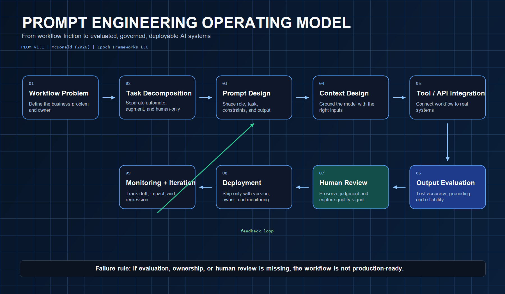
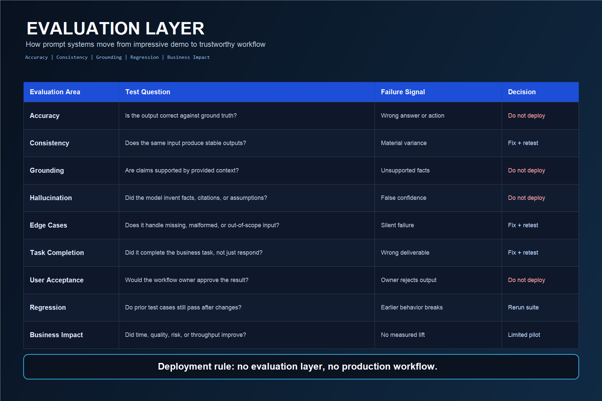

C-Suite
Which internal workflow, if improved by 30%, would create the most leverage without increasing operational risk?
This separates strategic leverage from AI theater.AI Infrastructure · Prompt + Context Engineering · Proof Asset
PEOM turns workflow friction into evaluated, governed, deployable AI systems. It is built for the point where model behavior, business process, human review, and measurable impact have to meet.
01 · Executive Entry Points
PEOM opens with business judgment before technical architecture. If the organization cannot answer these, the discovery engagement has already begun.
Which internal workflow, if improved by 30%, would create the most leverage without increasing operational risk?
This separates strategic leverage from AI theater.Are prompts treated as product infrastructure with versioning, evaluation, and regression checks?
This exposes whether AI quality is governed or improvised.Where are high-context employees translating messy information into decisions AI could support, but not fully own?
This finds the work that should be augmented before it is automated.02 · Lifecycle
A prompt that works once is not infrastructure. A workflow that is decomposed, contextualized, evaluated, governed, monitored, and owned can become infrastructure.

03 · Workflow Opportunity Intake
Intake protects the organization from starting with the most exciting AI idea instead of the highest-leverage workflow.
High-value workflow with owner, data, and review path.
Worth pursuing after the missing condition is resolved.
Data, ownership, or process clarity is not ready.
Automation would create more risk than leverage.
04 · Evaluation Layer
Evaluation is the difference between an impressive demo and a business system that can be trusted.

05 · Governance
Once a prompt enters a business workflow, it becomes an operational artifact. It needs ownership, versioning, evaluation, escalation, and monitoring.
Owner
One accountable person must own the workflow outcome.
Version
Prompt changes must be traceable across evaluation runs.
Review
Human review is both quality control and feedback signal.
Runtime
Out-of-scope or low-confidence outputs escalate.
06 · 30-Day Pilot
The pilot answers whether one workflow can be improved by AI in a way that is reliable, measurable, human-governed, and worth scaling.
Score 5-10 candidate workflows, select one pilot, confirm owner, define baseline metric.
Decompose the workflow, define AI role, design context, build initial prompt and review path.
Run accuracy, grounding, hallucination, edge case, acceptance, and regression tests.
Measure impact, review escalations, capture owner feedback, recommend scale, pause, or redesign.
Repository Handoff
This page is the executive surface. The README and docs contain the operating detail: workflow intake, lifecycle, evaluation, governance, and the 30-day pilot plan.